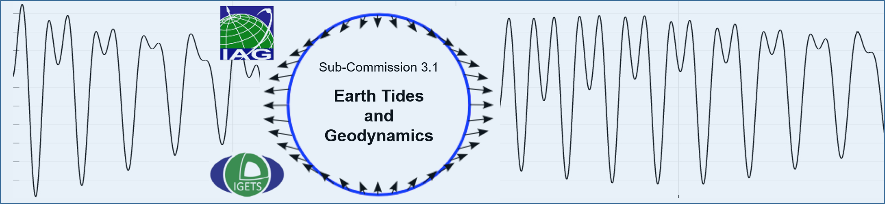

Online seminars
SC3.1 online seminars will start again in 2025 !
Those interested to share their work and give an online seminar, are kindly asked to contact Severine Rosat (severine.rosat@unistra.fr) or Xiaoming Cui (cxm@apm.ac.cn). This invitation includes PhD and Master students, as well as PostDocs and senior scientists.Geodynamics and Earth Tides Symposium
The SC3.1 is responsible for the organization of the Geodynamics and Earth Tides Symposium which is held every 4 years. In 2024, the 20th Geodynamics and Earth Tides Symposium was held in Strasbourg (France) from 25th to 30th of August. Thanks to all the speakers and attendees. The G-ETS2024 website is available here.The list of all ETS and G-ETS symposia is here.